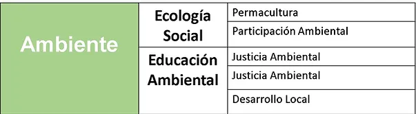

Historia del Barrio Caracolí
Un Vínculo con la Naturaleza
El barrio Caracolí, ubicado en la periferia de la ciudad, ha tenido una estrecha relación con la naturaleza desde su fundación. Rodeado de exuberantes paisajes y ricos en biodiversidad, los habitantes de Caracolí siempre han valorado y protegido su entorno natural. Esta conexión con la naturaleza no solo ha sido una fuente de recursos, sino también una inspiración para diversas iniciativas comunitarias y culturales.
Fundación y Crecimiento
Caracolí fue fundado en los años 70 por un grupo de familias que buscaban un lugar tranquilo y próspero para vivir. A lo largo de los años, el barrio ha crecido y se ha desarrollado gracias al esfuerzo y la colaboración de sus habitantes. La comunidad ha trabajado unida para mantener sus tradiciones y promover un estilo de vida sostenible y respetuoso con el medio ambiente.
Iniciativas Ambientales
Una de las principales características del barrio Caracolí es su compromiso con la conservación del medio ambiente. Los residentes han implementado diversos programas y proyectos enfocados en la protección y el cuidado de la naturaleza, como las huertas comunitarias, las jornadas de limpieza y reforestación, y las campañas de educación ambiental. Estas iniciativas han contribuido a mejorar la calidad de vida y a fomentar un sentido de responsabilidad y pertenencia entre los vecinos.
El Futuro de Caracolí
Con una visión clara hacia el futuro, Caracolí sigue apostando por el desarrollo sostenible y la preservación de su entorno natural. La comunidad está comprometida a seguir trabajando en conjunto para enfrentar los desafíos ambientales y sociales, siempre manteniendo el respeto y el amor por la naturaleza que ha caracterizado al barrio desde sus inicios.